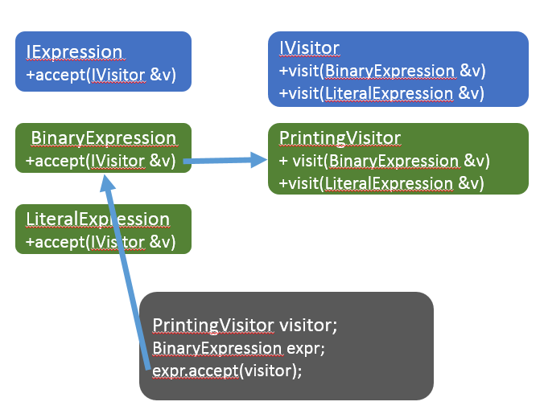

В данной статье описан пример минимального компилятора, бекенд которого основан на LLVM. Транслятор умеет превращать исходный код с функциями и выражениями в промежуточный код на языке LLVM-IR, который затем можно скомпилировать вручную.
Пример к статье доступен на github
Данный транслятор был получен путём доработки интерпретатора из примера lemon-8 с использованием LLVM для генерации кода. Была реализована только часть языка:
На данный момент не работают:
Пример компилируемого кода:
function main()
x = 2 + 34 / 2
print x - 4 * 0.5
end
Транслятор пока ещё не умеет компилировать файлы в объектные и выдаёт LLVM-IR код, который мы прокомментировали для вашего удобства. Вы легко заметите, что никаких вычислений в коде нет, потому что LLVM обнаружил константы и произвёл вычисления заранее:
; комментарии начинаются с ';'
; ModuleID = 'main module'
; source_filename - атрибут для отладочных целей
source_filename = "main module"
; @str - глобальная строковая константа, содержит строку "%lf\n"
@str = internal constant [5 x i8] c"%lf\0A\00"
; @printf - внешняя функция, реализация находится в стандартной библиотеке
; языка C и есть в каждой операционной системе
declare i32 @printf(i8*, ...)
; @main - точка входа программы по соглашениям LLVM-IR
define i32 @main() {
; entry - метка, открывающая первый блок инструкций функции
entry:
; инструкция call вызывает функцию printf
%0 = call i32 (i8*, ...) @printf(i8* getelementptr inbounds ([5 x i8], [5 x i8]* @str, i32 0, i32 0), double 0x4030FFFFFF800000)
ret i32 0
}
Также изменилась грамматика:
Транслятор читает входной поток целиком, и затем пишет в выходной поток LLVM-IR код в человекочитаемом виде. Этот код можно скомпилировать в исполняемый файл командой "clang main.ll".
Класс имеет очень простой интерфейс и реализует паттерн “Фасад” (“Facade”), т.е. его основная цель - объединить подсистемы компилятора в простой и удобный интерфейс.
class CCompilerDriver
{
public:
CCompilerDriver(std::ostream &errors);
~CCompilerDriver();
void StartDebugTrace();
bool Compile(std::istream &input, std::ostream &output);
private:
// Используется идиома pointer-to-implementation.
class Impl;
std::unique_ptr<Impl> m_pImpl;
};
Метод CCompilerDriver::Compile работает в два шага: сначала разбирает исходный текст и конструирует AST, а затем обходит AST в глубину и генерирует код. Именно генерация кода представляет наибольший интерес, поэтому рассмотрим её подробнее.
В интерпретаторе был использован паттерн “Интерпретатор”, т.е. каждый узел AST имел метод, который принимал контекст выполнения и выполнял рекурсивное вычисление узла с учётом текущего контекста выполнения:
// Вычисление выражения возвращает результат в виде CValue
class IExpressionAst
{
public:
virtual ~IExpressionAst() = default;
virtual CValue Evaluate(CInterpreterContext& context) const = 0;
};
// Выполнение инструкции результата не возвращает
class IStatementAst
{
public:
virtual ~IStatementAst() = default;
virtual void Execute(CInterpreterContext& context) const = 0;
};
// Вычисление функции требует список аргументов и возвращает результат в виде CValue
class IFunctionAst
{
public:
virtual ~IFunctionAst() = default;
virtual CValue Call(CInterpreterContext& context, std::vector<CValue> const& arguments) const = 0;
virtual unsigned GetNameId() const = 0;
};
Такой паттерн подходит для интерпретатора, где входные данные поступают вместе с исходным кодом программы и могут быть сразу использованы для вычисления. Процессы внутри компилятора выглядят сложнее:
Для множественной обработки AST лучше подходит паттерн “Посетитель”, который позволяет абстрагироваться от узлов AST. Для реализации паттерна достаточно создать у каждого узла дерева метод, например void Accept(IVisitor&), который будет вызывать правильную перегрузку метода IVisitor::Visit, соответствующую типу текущего узла, и рекурсивно вызывать Accept для дочерних узлов:

Для генерации кода выражений мы реализуем интерфейс IExpressionVisitor
class CExpressionCodeGenerator : protected IExpressionVisitor
{
public:
CExpressionCodeGenerator(llvm::IRBuilder<>& builder, CFrontendContext& context);
// Can throw std::exception.
llvm::Value* Codegen(IExpressionAST& ast);
protected:
void Visit(CBinaryExpressionAST& expr) override;
void Visit(CUnaryExpressionAST& expr) override;
void Visit(CLiteralAST& expr) override;
void Visit(CCallAST& expr) override;
void Visit(CVariableRefAST& expr) override;
private:
// Стек используется для временного хранения
// по мере рекурсивного обхода дерева выражения.
std::vector<llvm::Value*> m_values;
CFrontendContext& m_context;
llvm::IRBuilder<>& m_builder;
};
Для генерации списка инструкций нам потребуется принцип стековых вычислений
Принцип стековых вычислений описан в статье Стековые и регистровые машины
Для стековых вычислений есть нюанс: в нашем распоряжении есть только регистры, в них находятся операнды инструкций и попадают результаты выполнения. В языке LLVM-IR бесконечно много регистров, и для создания нового регистра достаточно просто присвоить его. Так может выглядеть вычисление “28 / 9 + 7 + 5.5” на LLVM-IR:
; Программа вычисляет выражение 28.0 / 9.0 + 7.0 * 5.5 и печатает в консоль результат
; @str - глобальная строковая константа, содержит строку "%lf\n"
@str = internal constant [5 x i8] c"%lf\0A\00"
; @printf - внешняя функция, реализация находится в стандартной библиотеке
; языка C и есть в каждой операционной системе
declare i32 @printf(i8*, ...)
define i32 @main() {
entry:
%0 = fdiv double 28.0, 9.0
%1 = fmul double 7.0, 5.5
%2 = fadd double %0, %1
%3 = getelementptr inbounds [5 x i8], [5 x i8]* @str, i32 0, i32 0
%4 = call i32 (i8*, ...) @printf(i8* %3, double %2)
ret i32 0
}
Нетрудно заметить, что здесь можно применить разложение выражения в линейный список инструкций с помощью стека. При этом в ячейках стека следует хранить не значения, а регистры, потому что на момент компиляции входных данных и соответственно значений ещё нет.
В библиотеках LLVM объекты регистров представляются указателями типа llvm::Value*, а в качестве стека подойдёт обычный std::vector. Класс CExpressionCodeGenerator по мере рекурсивного обхода одного выражения сохраняет регистры с результатами подвыражений в поле std::vector<llvm::Value*> m_values;. В конце обхода (в случае, если кодогенератор написан правильно) на стеке останется ровно один регистр, который и будет хранить в себе значение после выполнения всех инструкций.
Value* CExpressionCodeGenerator::Codegen(IExpressionAST& ast)
{
llvm::Value* pValue = nullptr;
try
{
ast.Accept(*this);
pValue = m_values.at(0);
m_values.clear();
}
catch (std::exception const& ex)
{
m_context.PrintError(ex.what());
}
return pValue;
}
Генерация инструкций выполняется с помощью объекта llvm::IRBuilder<>& m_builder;:
Value* GenerateUnaryExpr(IRBuilder<>& builder, LLVMContext& context, UnaryOperation op, Value* x)
{
(void)context;
switch (op)
{
case UnaryOperation::Plus:
return x;
case UnaryOperation::Minus:
// Генерация инструкции negtmp
return builder.CreateFNeg(x, "negtmp");
}
throw std::runtime_error("Unknown unary operation");
}
void CExpressionCodeGenerator::Visit(CUnaryExpressionAST& expr)
{
expr.GetOperand().Accept(*this);
Value* x = m_values.at(m_values.size() - 1);
m_values.pop_back();
auto pValue = GenerateUnaryExpr(m_builder, m_context.GetLLVMContext(), expr.GetOperation(), x);
m_values.push_back(pValue);
}
В процедурных языках программирования есть цепочки инструкций, и в языках ассемблера они тоже есть. Поэтому генерация кода инструкций заключается в простом последовательном отображении высокоуровневых инструкций вашего языка на низкоуровневые инструкции ассемблера. Однако, с некоторыми высокоуровневыми конструкциями могут возникнуть сложности: мы рассмотрим основные случаи. Для генерации кода цепочек инструкций служит класс CBlockCodeGenerator:
class CBlockCodeGenerator : protected IStatementVisitor
{
public:
CBlockCodeGenerator(CFrontendContext& context);
void Codegen(llvm::BasicBlock& bb, const StatementsList& block);
void AddExitMain();
// IStatementVisitor interface
protected:
void Visit(CPrintAST& ast) override;
void Visit(CAssignAST& expr) override;
void Visit(CReturnAST& expr) override;
void Visit(CWhileAst& expr) override;
void Visit(CRepeatAst& expr) override;
void Visit(CIfAst& expr) override;
private:
CFrontendContext& m_context;
llvm::IRBuilder<> m_builder;
CExpressionCodeGenerator m_exprGen;
};
Начнём с самой простой инструкции возврата, которая должна просто привести в вызову инструкции ret языка LLVM-IR:
// Выбрасывает ret double %имя_регистра
void CBlockCodeGenerator::Visit(CReturnAST& expr)
{
if (auto* pValue = m_exprGen.Codegen(expr.GetValue()))
{
m_builder.CreateRet(pValue);
}
}
Немного сложнее будет реализация присваивания: по сути переменные - это отображение имени (идентификатора) на некоторую ячейку памяти, а для построения такого отображения в памяти компилятора подойдёт структура данных “хеш-массив” (известная как ассоциативный массив или словарь). В примере ниже вызывается метод AssignVariable, который получает регистр, имя переменной (в виде целочисленного ID) и сохраняет отображение имени на регистр в хеш-таблице. Пока что у нас нет обработки областей видимости, поэтому хеш-таблица единая на всю программу.
void CBlockCodeGenerator::Visit(CAssignAST& ast)
{
llvm::Value* pValue = m_exprGen.Codegen(ast.GetValue());
m_context.AssignVariable(ast.GetNameId(), pValue);
}